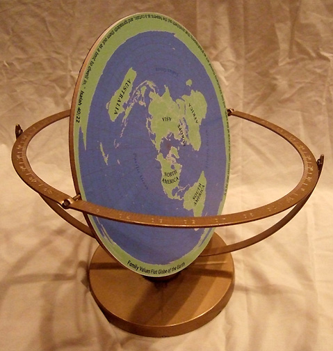
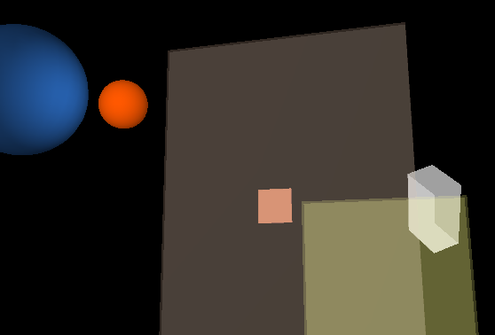
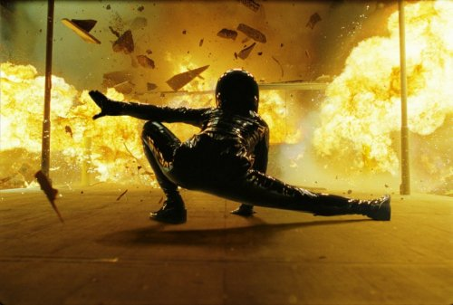
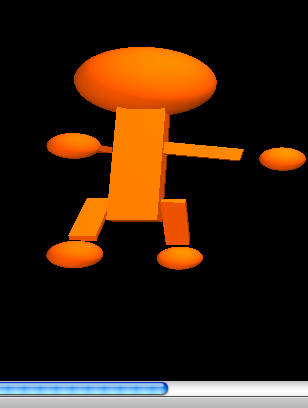
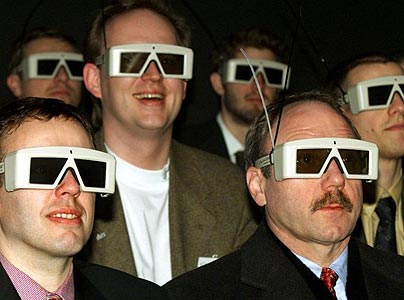
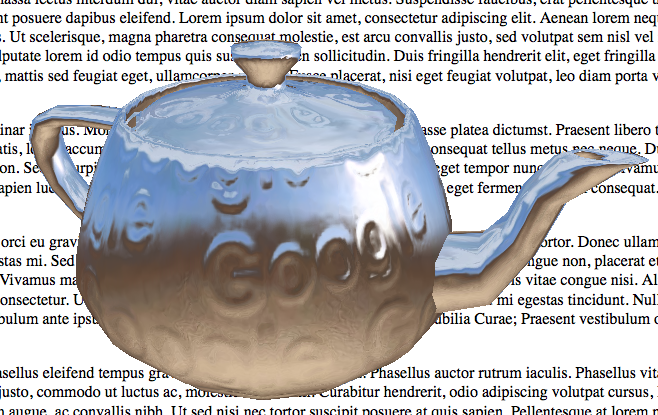
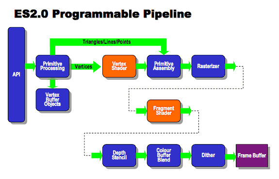

websock = new WebSocket("ws://localhost:8080");
websock.onopen = function(evt) {
console.log("opened websocket")
websock.send("Hello Web Socket!");
};
websock.onmessage = function(evt) {
console.log("received message " + evt.data);
};
websock.onclose = function(evt) {
console.log("I really should try to connect again");
};
require 'em-websocket'
EventMachine::WebSocket.start(:host => "0.0.0.0", :port => 8080) do |ws|
ws.onopen { ws.send "Hello Client!"}
ws.onmessage { |msg| ws.send "Pong: #{msg}" }
ws.onclose { puts "WebSocket closed" }
end
